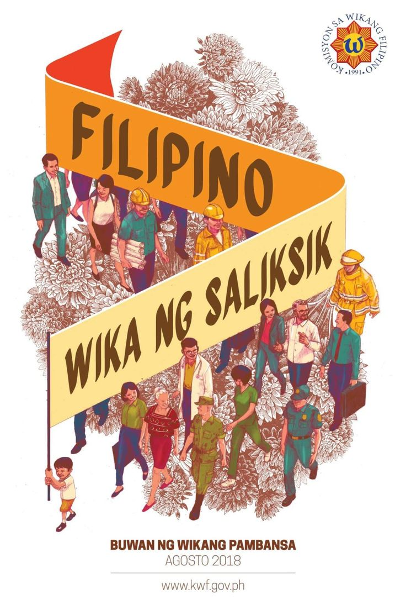

Filipino's has a celebration known as "Buwan ng Wika" is held annually every month of August. The main agency who promote this events is the Filipino Language Commission to promote the national language Filipino.

Origin
The President of the Philippines in 1935 attempt to establish a national language during the Commonwealth led by President Manuel Quezon.
In 1946, a language based on Tagalog was adopted as the national language which is officially designated as Filipino in 1959.
President Manuel Quezon was born and raised in Aurora specifically in town of Baler. The locals there speak Tagalog.
Pilipino was formally replaced by "Filipino" in 1973.
The Philippines declared Filipino and English as official languages of the Philippines under the Constitution of 1987.
Language Month
Language Week was extended in Proclamation No. 1041, On January 15, 1997 by President Fidel Ramos to cover the whole month of August. By that the name of the celebration was changed to Buwan ng Wikang Pambansa.
On 2019, the promotion of other indigenous languages in the Philippines has become part of the celebration in line with the UNESCO's designation of the year as the "International Year of Indigenous Languages"
Absolutes and Activities
The main holder of the event of Buwan ng Wika is The Filipino Language Commission. The agency handle the events to promote the local language and Filipino nationalism.
Every school has events where students wear a costume on the last day of the month, they wear traditional Filipino outfit and make an events such as singing, spoken word poetry, original Filipino music and Filipino Dance competitions.